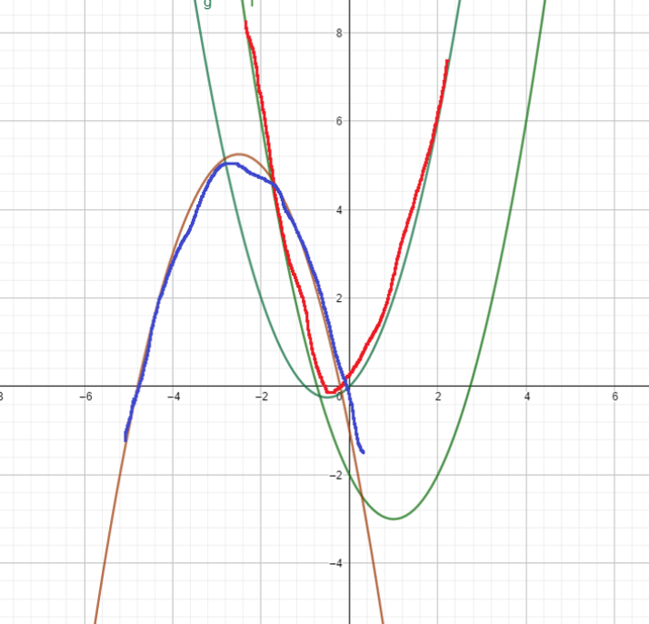

2021-2022 Russia Team Open, High School Programming Contest (VKOSHP XXII)
-
比赛链接：link
-
Rank 16, solved 10/12
A.Natives
签到题，输出从大到小排序后前\(\lfloor \frac n 2 \rfloor\)个数的和即可。
C.How Many Strings Are Less
给定一个字符串\(s\)和\(n\)个模式串\(k_i\)，\(Q\)次操作每次将\(s\)中从第\(p_i\)开始往后的所有字符变成\(c_i\)，问每次操作后\(s\)严格大于多少个模式串。
\(n,Q,|s|,\sum|k_i|\leq 10^6\)
首先我们考虑没有修改操作怎么做，一个很简单的做法是对模式串建立字典树，记录字典树上每个节点经过的串的个数和以这个节点为结尾的串的个数。统计答案时用\(s\)在Trie上匹配并累计个数即可。
显然，我们建立Trie树后再dfs一遍，还可以统计出，对Trie树上每个节点，小于这个节点表示的串的模式串有多少个。
那么如果我们知道\(s\)能够匹配到Trie树上哪个节点，且知道\(s\)失配的是哪一个字符，我们就可以快速统计答案。
考虑一次修改，设当前\(s\)在Trie上匹配到了第\(l\)个字符，那么实际上有三种情况：
- 若\(l<p+1\)，则说明这次修改不会对答案产生任何影响，因为这并不影响\(s\)失配的字符
- 若\(l==p+1\)，则说明需要从这个节点一直往\(c\)跳
- 若\(l>p+1\)，则说明需要从这个节点往根走\(l-(p+1)\)步，再一直往\(c\)跳
不难想到可以预处理出\(nc[x][c]\)表示Trie上的\(x\)节点，一直匹配\(c\)能最终匹配到的节点是哪个。这样我们找到修改的节点后就可以直接往下跳。而往上跳的过程可以用倍增跳fa实现。
复杂度\(O(26n+(n+Q)\log n)\)
1
2
3
4
5
6
7
8
9
10
11
12
13
14
15
16
17
18
19
20
21
22
23
24
25
26
27
28
29
30
31
32
33
34
35
36
37
38
39
40
41
42
43
44
45
46
47
48
49
50
51
52
53
54
55
56
57
58
59
60
61
62
63
64
65
66
67
68
69
70
71
72
73
74
75
76
77
78
79
80
81
82
83
84
85
86
87
88
89
90
91
92
93
94
95
96
97
98
99
100
101
102
103
104
105
106
107
108
109
110
111
112
113
114
115
116
117
118
119
120
121
122 | #include<bits/stdc++.h>
#define fi first
#define se second
#define pb push_back
#define mkp make_pair
#define rep(i,l,r) for(int i=(l),i##end=(r);i<=i##end;i++)
#define dwn(i,l,r) for(int i=(l),i##end=(r);i>=i##end;i--)
#define forn(i,n) for(int i=0;i<(n);i++)
#define hvie '\n'
using namespace std;
typedef pair<int,int> pii;
typedef long long ll;
int read(){
int ret=0,f=0;char c=getchar();
while(!isdigit(c)){if(c=='-')f=1;c=getchar();}
while(isdigit(c)){ret=ret*10+(c^48);c=getchar();}
return f?-ret:ret;
}
const int N=1e6+100;
int ans[N][26];//now x,if append c,the ans
int n,Q;
int cur,lens,nowd,nowc;
namespace Trie{
int m=1;
int c[N][26],nc[N][26],cnt[N],cntend[N],dep[N],fa[22][N];
void insert(char *s,int n){
int now=1;
for(int i=0;i<n;++i){
int t=s[i]-'a';
if(!c[now][t]) c[now][t]=++m;
now=c[now][t];
++cnt[now];
}
++cntend[now];
}
void dfs(int x,int dp,int sum){
dep[x]=dp;
for(int i=0;i<26;++i){
ans[x][i]=sum+cntend[x];
if(c[x][i]){
fa[0][c[x][i]]=x;
dfs(c[x][i],dp+1,sum+cntend[x]);
sum+=cnt[c[x][i]];
if(dep[c[x][i]]<=lens) nc[x][i]=nc[c[x][i]][i];
}
else{
if(dep[x]<=lens) nc[x][i]=x;
}
if(dep[x]==lens) nc[x][i]=x;
}
}
void init(){
for(int j=1;j<22;++j) for(int i=1;i<=m;++i){
fa[j][i]=fa[j-1][fa[j-1][i]];
}
}
int jump(int now,int stp){
for(int i=0;i<22;++i){
if(stp&(1<<i)) now=fa[i][now];
}
return now;
}
};
using namespace Trie;
char s[N],ss[N];
void solve(){
n=read();Q=read();
scanf("%s",s);lens=strlen(s);
for(int i=1;i<=n;++i){
scanf("%s",ss);
insert(ss,strlen(ss));
}
dfs(1,0,0);
init();
cur=1;nowd=0;nowc=0;
for(int i=0;i<lens;++i){
int t=s[i]-'a';
if(!c[cur][t]){
break;
}
nowd++;cur=c[cur][t];
}
nowc=(nowd==lens?0:s[nowd]-'a');
if(nowd==lens) printf("%d\n",ans[cur][0]-cntend[cur]);
else printf("%d\n",ans[cur][s[nowd]-'a']);
//printf("%d %d\n",cur,nowd);
while(Q--){
char zc[2];
int p=read(),ch;scanf("%s",zc);ch=zc[0]-'a';
if(p>nowd+1){
//printf("here!\n");
}
else if(p==nowd+1){
cur=nc[cur][ch];nowc=ch;nowd=dep[cur];
}
else{
//printf("jump!!:%d %d\n",cur,nowd-p+1);
cur=jump(cur,nowd-p+1);cur=nc[cur][ch];
nowc=ch;nowd=dep[cur];
}
if(nowd==lens) printf("%d\n",ans[cur][0]-cntend[cur]);
else printf("%d\n",ans[cur][nowc]);
//printf("%d %d\n",cur,nowd);
}
}
signed main(){
for(int cas=1;cas--;){
solve();
}
return 0;
}
|
H.Lots of Parabolas
给定\(n\)条形如\(ax^2+bx+c\)的二次曲线，求一个点使得它在所有曲线的开口范围内（不包括边界），点保证存在。
\(n\leq 10^5,|a|,|b|,|c|\leq 10^9,a\neq 0\)
如图，红色部分为\(a>0\)的曲线交，蓝色部分为\(a<0\)的曲线交。

不难发现对所有\(a>0\)的曲线，开口的交是一个凸函数\(f(x)\)；对所有\(a<0\)的曲线，开口的交也是一个凸函数\(g(x)\)。设求的点\(p(x_p,y_p)\)，显然有\(f(x_p)<y_p<g_(x_p)\)。而\(h(x)=f(x)-g(x)\)又是一个凸函数，于是我们只需要三分出\(h(x)\)的最小值的\(x\)，然后\(x_p=\frac {f(x)+g(x)} 2\)即可。
复杂度\(O(n\log |W|)\)
I.Wheel of Fortune
猜单词游戏，有\(n\)个长度为\(L\)的字符串为可能的答案。你每次可以询问一个字母，若答案字符串中有这个字母，则告诉你这个字母出现的所有位置；若没有则输。问你是否一定能获胜。
\(L\leq 10^6,n\leq 10^5 \sum |s|\leq 10^6\)
实际上是个模拟题。
显然每次询问要保证当前可能的答案集合里每个串都有这个字母，而在询问完这个字母以后，会将这个集合按照字母出现的位置分成若干个更小的集合。
如果一个集合size>1，且没有未知的相同的字母了，那么存在猜不中的可能，直接输出NO。如果集合size=1说明这条路线可行。
同时不难发现任意猜字母的顺序不影响结果，所以就变成了一个模拟题。
每个串对每个字母都会分配到一个集合中，因此复杂度\(O(26n)\)，实现上可以用map, vector\ >这种东西。
1
2
3
4
5
6
7
8
9
10
11
12
13
14
15
16
17
18
19
20
21
22
23
24
25
26
27
28
29
30
31
32
33
34
35
36
37
38
39
40
41
42
43
44
45
46
47
48
49
50
51
52
53
54
55
56
57
58
59
60
61
62
63
64
65
66
67
68
69
70
71
72
73
74
75
76
77
78
79
80
81
82
83 | #include<bits/stdc++.h>
#define fi first
#define se second
#define pb push_back
#define mkp make_pair
#define rep(i,l,r) for(int i=(l),i##end=(r);i<=i##end;i++)
#define dwn(i,l,r) for(int i=(l),i##end=(r);i>=i##end;i--)
#define forn(i,n) for(int i=0;i<(n);i++)
#define hvie '\n'
using namespace std;
typedef pair<int,int> pii;
typedef long long ll;
int read(){
int ret=0,f=0;char c=getchar();
while(!isdigit(c)){if(c=='-')f=1;c=getchar();}
while(isdigit(c)){ret=ret*10+(c^48);c=getchar();}
return f?-ret:ret;
}
const int N=1e6+10;
int n,m;
bool hv[N][26];
string st[N];
void solve(const vector<int>&now,const set<int>&alp){
if(now.size()==1) return;
int d=-1;
for(auto v:alp){
bool flag=1;
for(auto s:now){
if(!hv[s][v]){
flag=0;
break;
}
}
if(flag){
d=v;
break;
}
}
if(d==-1){
puts("NO");
exit(0);
}
map<vector<int>,vector<int> >mp;
for(auto s:now){
vector<int>tmp;
for(int i=0;i<m;++i){
if(st[s][i]-'a'==d) tmp.pb(i);
}
mp[tmp].pb(s);
}
set<int>nlp;
for(auto v:alp) nlp.insert(v);
nlp.erase(d);
for(auto v:mp){
solve(v.se,nlp);
}
}
void solve(){
m=read();n=read();
vector<int>now;
set<int>alp;
for(int i=0;i<26;++i) alp.insert(i);
for(int i=1;i<=n;++i){
cin>>st[i];
for(int j=0;j<m;++j) hv[i][st[i][j]-'a']=1;
now.pb(i);
}
solve(now,alp);
puts("YES");
}
signed main(){
for(int cas=1;cas--;){
solve();
}
return 0;
}
|
Problem L. Birthday
有 \(n\) 张卡片放在桌子上，每张卡片一面写着 \(a_i\)，另一面写着 \(b_i\)。每张卡片可以选择任意一面朝上，区间 \([l,r]\) 的权值 \(f(l,r)\) 为第 \(l\sim r\) 张卡片朝上那面的数值之和，但如果和是 \(k\) 的倍数，则权值会被强制置 \(0\)。
求 \(\sum\limits_{l=1}^{n}{\sum\limits_{r=l}^{n}{f(l,r)}}\)，答案对 \(10^9+7\) 取模。每个区间权值的计算是独立的，即在统计不同区间时，同一张卡片的状态不必相同。
\(n\leq 5\times 10^5,k\leq 10^9\)
SOL1:
如果没有 \(k\) 的倍数的限制，显然每张卡片都会选择较大的那面朝上（不妨假设 \(a_i\geq b_i\) ）。
现在考虑那些和是 \(k\) 的倍数的区间（称为不合法的区间），我们尝试将其中一张卡片翻面，使它不再是 \(k\) 的倍数。
秉持着要让区间和最大的目标，我们会选择 \(a_i-b_i\) 不是 \(k\) 的倍数且最小的那个。
设当前区间 \([L,R]\) 中的“这张”卡片为 \(p\)，则该区间内的不合法区间 \([l,r](L\leq l\leq p\leq r\leq R)\)，都会选择将这张卡翻面，从而变得合法。
而卡片 \(p\) 翻面后，区间 \([L,R]\) 被分成了两个小区间，\([L,p-1]\) 和 \([p+1,R]\)，递归进去处理即可。
但是，卡片 \(p\) 可能并不存在，即所有 \(a_i-b_i\) 都是 \(k\) 的倍数，此时任何卡片翻面都无法改变区间的合法性（注意这不代表这个区间的所有子区间都是不合法的，例如 \(a=[3,1,3],b=[3,1,3]\) ，此时仍然存在合法的区间，例如 \([2,2]\) ，只是子区间 \([1,1],[3,3]\) 不合法的状况无法改变了，需要将它们的权值清零），此时需要统计该区间内的所有不合法区间的权值和，并直接退出。
卡片 \(p\) 很好找，用ST表预处理然后区间RMQ查询即可。
下面考虑对于当前区间 \([L,R]\)，统计有多少个和为 \(k\) 的倍数的子区间 \([l,r]\) 满足 \(l\leq p\leq r\)。
对序列做前缀和 \(psum\)（对 \(k\) 取余），若 \(psum[r]=psum[l-1]\) ，则区间 \([l,r]\) 的和是 \(k\) 的倍数。
那么用 std::map \(cntpsum\) 记录 \([L,R]\) 中每个前缀和出现的次数，子区间 \([l,r]\) 的个数可以这么统计出来：
- 在 \(cntpsum\) 中删除 \(psum[L\sim p]\)
- 枚举 \(psum[L-1\sim p]\)，累计当前值在 \(cntpsum\) 中的出现次数
但是它的操作次数是 \(O(p-L)\) 的，若每次 \(p=R\)，复杂度将退化为区间长度，这无法接受。
那么做后缀和 \(ssum\)，通过与前缀和统计完全对称的后缀和统计的方法，即可通过 \(ssum[p\sim R+1]\) 出现的次数得到子区间的个数。
我们只需要根据左右区间哪个更小，灵活选择用前缀和统计或者后缀和统计，此时的操作次数是 \(\min(r-p+1,p-l+1)\leq \frac{R-L+1}{2}\)，不会超过区间大小的一半！
类似的，由于我们需要得到当前区间的前后缀和出现次数的map \(cntpsum/cntssum\)，递归到下一层时，根据子区间的大小，它们的map会有两种来源（假设 \([L,p-1]\) 更大）：
- 对于 \([L,p-1]\)，将\([L,R]\) 的
map 中删去 \(ssum[p\sim R]\) 和 \(psum[p\sim R]\)
- 对于 \([p+1,R]\)，开一个新的
map，并将 \(ssum[p+1\sim R]\) 和 \(psum[p+1\sim R]\) 逐个插入
这样也能保证操作次数不超过区间长度的一半。
复杂度为常数极大的 \(O(n\log{n})\) 或者 \(O(n\log^2{n})\) ？
反正2000ms的时限几乎是贴着过的（1900+ms），稍微优化了一下跑到了1700ms，还是很慢（队友第二天用另一种方法统计只跑了700ms）。
千万记得关同步，好久没有大数据输入了，5e5的输入cin 根本顶不住，读入就T了。
SOL2:
这里是看上去比较好写的做法。
首先还是对\(b_i\)做前缀和\(sum_i\)，然后求一遍假设全取\(b_i\)的答案。记\(d_i=(b_i-a_i)\%K?(b_i-a_i):\inf\)，那么对于每一对\(sum_i\equiv sum_j (\text{mod }K)\)的\((i,j)\)，实际上贡献就是将\([i+1,j]\)里面最小的\(d_i\)减去，但若\(d_i=\inf\)，就是减去\((sum_j-sum_i)\)。
按\(sum_i\%K\)分组，假设有\(m\)个位置\(p_i\)，对每两个相邻的位置，我们可以得到一个\(mind_i\)，一共\(m-1\)个，这个可以通过st表简单实现。（这里下标都从1开始）
接下来考虑每个\(mind_i\)的贡献区间，这是一个经典的单调栈问题，那么可以得到\(mind_{l[i]}\leq mind_i,mind_{r[i]}<mind_i\)。
若\(mind_i<\inf\)，则\(mind_i\)的贡献次数为：
\[(r[i]-i+1)\cdot (i-l[i]+1)\]
否则我们需要快速计算每个\(sum_{p_i}\)需要减去的贡献，这个问题可以对\(sum_{p_i}\)做前缀和\(ssum_i\)（下标\(1\sim m\)），那么减去的贡献为：
\[(ssus_{r[i]+1}-ssum[i])\cdot (i-l[i]+1)(ssum[i]-ssum[l[i]-1])\cdot (r[i]-i+1)\]
实际上就是（右边sum和\(\times\)左边端点个数-左边sum和\(\times\)右边端点个数）。
由于每个\(sum_i\)只在一组中被统计贡献，那么复杂度是\(O(n\log n)\)，瓶颈在st表求区间最小值，其他部分都是\(O(n)\)的。
1
2
3
4
5
6
7
8
9
10
11
12
13
14
15
16
17
18
19
20
21
22
23
24
25
26
27
28
29
30
31
32
33
34
35
36
37
38
39
40
41
42
43
44
45
46
47
48
49
50
51
52
53
54
55
56
57
58
59
60
61
62
63
64
65
66
67
68
69
70
71
72
73
74
75
76
77
78
79
80
81
82
83
84
85
86
87
88
89
90
91
92
93
94
95
96
97
98
99
100
101
102
103
104
105
106
107
108
109
110
111
112
113
114
115
116
117
118
119
120
121
122
123
124
125
126
127
128
129
130
131
132
133
134
135
136
137
138
139
140
141
142
143
144
145
146
147
148
149
150
151
152
153
154
155
156
157
158
159
160
161
162
163
164
165
166
167
168
169
170
171
172
173
174
175
176
177
178
179
180
181
182
183
184
185
186
187
188
189
190
191
192
193
194
195
196
197
198
199
200
201
202
203
204
205
206
207
208
209
210
211
212
213
214
215
216
217
218
219
220
221
222
223
224
225 | //sol1
#include <bits/stdc++.h>
using namespace std;
const int MOD = 1e9 + 7;
using ll = long long;
struct mint {
int n;
mint() : n(0) { ; }
mint(ll m) {
if (m < 0 || MOD <= m) {
m %= MOD;
if (m < 0)
m += MOD;
}
n = m;
}
operator int() {
return n;
}
};
bool operator==(mint a, mint b) {
return a.n == b.n;
}
mint operator+=(mint &a, mint b) {
a.n += b.n;
if (a.n >= MOD)
a.n -= MOD;
return a;
}
mint operator-=(mint &a, mint b) {
a.n -= b.n;
if (a.n < 0)
a.n += MOD;
return a;
}
mint operator*=(mint &a, mint b) {
a.n = ((ll)a.n * b.n) % MOD;
return a;
}
mint operator+(mint a, mint b) {
return a += b;
}
mint operator-(mint a, mint b) {
return a -= b;
}
mint operator*(mint a, mint b) {
return a *= b;
}
mint operator^(mint a, ll n) {
if (n == 0)
return mint(1);
mint res = (a * a) ^ (n / 2);
if (n % 2)
res = res * a;
return res;
}
ll inv(ll a, ll p) {
return (a == 1 ? 1 : (1 - p * inv(p % a, a)) / a + p);
}
mint operator/(mint a, mint b) {
return a * mint(inv(b, MOD));
}
mint operator/=(mint &a, mint b) {
a = a / b;
return a;
}
int main() {
cin.tie(NULL)->sync_with_stdio(false);
int n, k;
cin >> n >> k;
vector<int> a(n + 1), b(n + 1), c(n + 1);
for (int i = 1, x, y; i <= n; ++i) {
cin >> x >> y;
a[i] = max(x, y) - min(x, y);
b[i] = max(x, y);
c[i] = (bool)(a[i] % k);
}
vector<int> bin(20), lg(n + 1);
bin[0] = 1;
for (int i = 1; i < 20; ++i)
bin[i] = bin[i - 1] * 2;
for (int i = 2; i <= n; ++i)
lg[i] = lg[i / 2] + 1;
auto f = vector(lg[n] + 1, vector(n + 1, 0));
auto getMin = [&](int x, int y) {
if (c[x] && c[y])
return a[x] < a[y] ? x : y;
return c[x] ? x : y;
};
for (int i = 1; i <= n; ++i)
f[0][i] = i;
for (int i = 1; i <= lg[n]; ++i) {
for (int j = 1; j + bin[i] - 1 <= n; ++j) {
f[i][j] = getMin(f[i - 1][j], f[i - 1][j + bin[i - 1]]);
}
}
auto queryMin = [&](int l, int r) {
int k = lg[r - l + 1];
return getMin(f[k][l], f[k][r - bin[k] + 1]);
};
unordered_map<int, int> pre, suf;
vector<int> psum(n + 2), ssum(n + 2);
for (int i = 1; i <= n; ++i) {
psum[i] = (psum[i - 1] + b[i]) % k;
pre[psum[i]]++;
};
for (int i = n; i >= 1; --i) {
ssum[i] = (ssum[i + 1] + b[i]) % k;
suf[ssum[i]]++;
}
auto remove = [&](unordered_map<int, int> &pre, unordered_map<int, int> &suf, int l, int r) {
for (int i = l; i <= r; ++i) {
--pre[psum[i]];
--suf[ssum[i]];
}
};
vector<mint> bsum(n + 1), asum(n + 1);
for (int i = 1; i <= n; ++i) {
bsum[i] = bsum[i - 1] + mint(b[i]);
asum[i] = asum[i - 1] + bsum[i];
}
function<mint(int, int, unordered_map<int, int>&, unordered_map<int, int>&)> dfs = [&](int l, int r, unordered_map<int, int> &pre, unordered_map<int, int> &suf) -> mint {
if (l > r)
return 0;
int p = queryMin(l, r);
if (a[p] % k == 0) {
unordered_map<int, mint> mp, cnt;
for (int i = l; i <= r; ++i) {
mp[psum[i]] += bsum[i];
cnt[psum[i]] += mint(1);
}
mint ans = mp[psum[l - 1]] - cnt[psum[l - 1]] * bsum[l - 1];
for (int i = l; i <= r; ++i) {
ans += mp[psum[i]] - cnt[psum[i]] * bsum[i];
mp[psum[i]] -= bsum[i];
cnt[psum[i]] -= mint(1);
}
return ans;
}
int lsz = p - l, rsz = r - p;
mint cnt = 0, ans = 0, val = a[p];;
unordered_map<int, int> mpp, mps;
if (lsz > rsz) {
remove(pre, suf, p, r);
++pre[psum[l - 1]];
for (int i = p; i <= r; ++i)
cnt += mint(pre[psum[i]]);
--pre[psum[l - 1]];
ans += dfs(l, p - 1, pre, suf);
for (int i = p + 1; i <= r; ++i)
mps[ssum[i]]++, mpp[psum[i]]++;
ans += dfs(p + 1, r, mpp, mps);
} else {
remove(pre, suf, l, p);
++suf[ssum[r + 1]];
for (int i = l; i <= p; ++i)
cnt += suf[ssum[i]];
--suf[ssum[r + 1]];
ans += dfs(p + 1, r, pre, suf);
for (int i = l; i < p; ++i)
mps[ssum[i]]++, mpp[psum[i]]++;
ans += dfs(l, p - 1, mpp, mps);
}
return ans + cnt * val;
};
mint ans = 0, sum = asum[n];
for (int i = 1; i <= n; ++i) {
ans += sum - mint(n - i + 1) * bsum[i - 1];
sum -= bsum[i];
}
cout << ans - dfs(1, n, pre, suf) << endl;
return 0;
}
|
1
2
3
4
5
6
7
8
9
10
11
12
13
14
15
16
17
18
19
20
21
22
23
24
25
26
27
28
29
30
31
32
33
34
35
36
37
38
39
40
41
42
43
44
45
46
47
48
49
50
51
52
53
54
55
56
57
58
59
60
61
62
63
64
65
66
67
68
69
70
71
72
73
74
75
76
77
78
79
80
81
82
83
84
85
86
87
88
89
90
91
92
93
94
95
96
97
98
99
100
101
102
103
104
105
106
107
108
109
110
111 | //sol2
#include<bits/stdc++.h>
#define fi first
#define se second
#define pb push_back
#define mkp make_pair
#define int long long
#define rep(i,l,r) for(int i=(l),i##end=(r);i<=i##end;i++)
#define dwn(i,l,r) for(int i=(l),i##end=(r);i>=i##end;i--)
#define forn(i,n) for(int i=0;i<(n);i++)
#define hvie '\n'
using namespace std;
typedef pair<int,int> pii;
typedef long long ll;
int read(){
int ret=0,f=0;char c=getchar();
while(!isdigit(c)){if(c=='-')f=1;c=getchar();}
while(isdigit(c)){ret=ret*10+(c^48);c=getchar();}
return f?-ret:ret;
}
const int N=5e5+10,mod=1e9+7,inf=0x3f3f3f3f3f3f3f3f;
int n,K,ans;
int a[N],b[N],sum[N],Log[N],fc[22];
int st[22][N];
unordered_map<int,vector<int> >mp;
int upm(int x){return (x%mod+mod)%mod;}
void up(int &x,int y){x=upm(x+y);}
int getmin(int l,int r){
int t=Log[r-l+1];
return min(st[t][l],st[t][r-fc[t]+1]);
}
int val[N],lm[N],rm[N],sums[N];
stack<int>s;
int calc(const vector<int>&vec){
int ret=0,cnt=0;
for(int i=0;i<(int)vec.size()-1;++i)
val[++cnt]=getmin(vec[i]+1,vec[i+1]);
sums[1]=sum[vec[0]];
for(int i=1;i<(int)vec.size();++i)
sums[i+1]=upm(sums[i]+sum[vec[i]]);
while(!s.empty()) s.pop();
val[0]=-inf;s.push(0);
for(int i=1;i<=cnt;++i){
while(!s.empty() && val[s.top()]>=val[i]) s.pop();
lm[i]=s.top()+1;s.push(i);
}
while(!s.empty()) s.pop();
val[cnt+1]=-inf;s.push(cnt+1);
for(int i=cnt;i>=1;--i){
while(!s.empty() && val[s.top()]>val[i]) s.pop();
rm[i]=s.top()-1;s.push(i);
}
for(int i=1;i<=cnt;++i){
if(val[i]==inf){
int cr=upm(sums[rm[i]+1]-sums[i])*(i-lm[i]+1)%mod;
int cl=upm(sums[i]-sums[lm[i]-1])*(rm[i]-i+1)%mod;
up(ret,-cr);up(ret,cl);
}
else{
int tim=(rm[i]-i+1)*(i-lm[i]+1);
up(ret,-tim%mod*val[i]%mod);
}
}
return ret;
}
void solve(){
fc[0]=1;
for(int i=1;i<22;++i) fc[i]=fc[i-1]<<1;
for(int i=2;i<N;++i) Log[i]=Log[i>>1]+1;
n=read();K=read();
for(int i=1;i<=n;++i){
a[i]=read(),b[i]=read();
if(a[i]<b[i]) swap(a[i],b[i]);
b[i]=a[i]-b[i];
}
mp[0].pb(0);
for(int i=1;i<=n;++i){
sum[i]=sum[i-1]+a[i];
mp[sum[i]%K].pb(i);
}
int ans=0;
for(int i=1;i<=n;++i){
sum[i]%=mod;
up(ans,sum[i]*(2*i-n)%mod);
if(b[i]%K) st[0][i]=b[i];
else st[0][i]=inf;
}
for(int j=1;j<21;++j) for(int i=1;i<=n-fc[j]+1;++i){
st[j][i]=min(st[j-1][i],st[j-1][i+fc[j-1]]);
}
for(auto v:mp){
up(ans,calc(v.se));
}
printf("%lld\n",ans);
}
signed main(){
for(int cas=1;cas--;){
solve();
}
return 0;
}
|